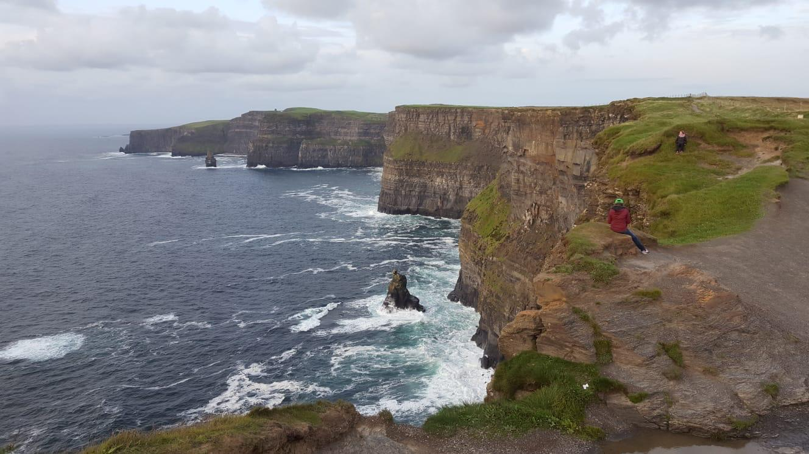
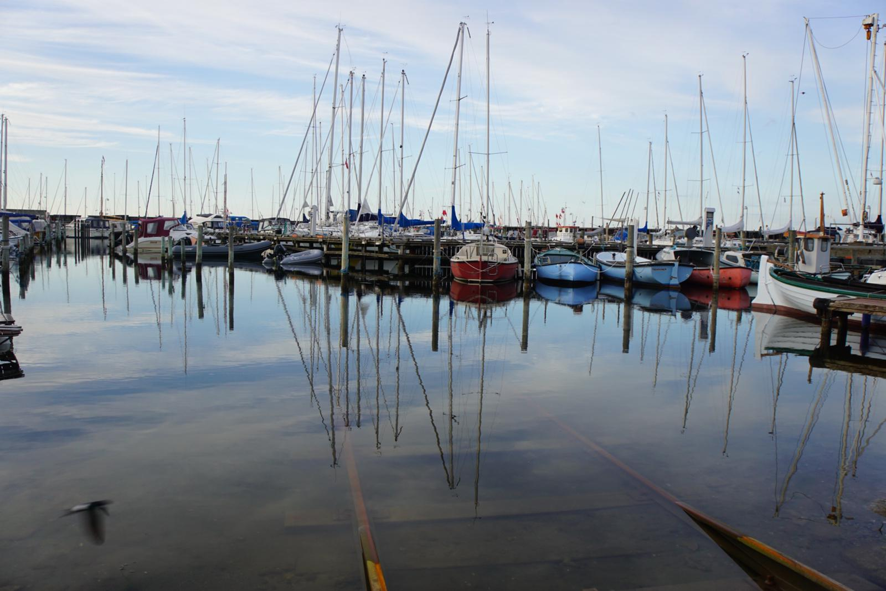
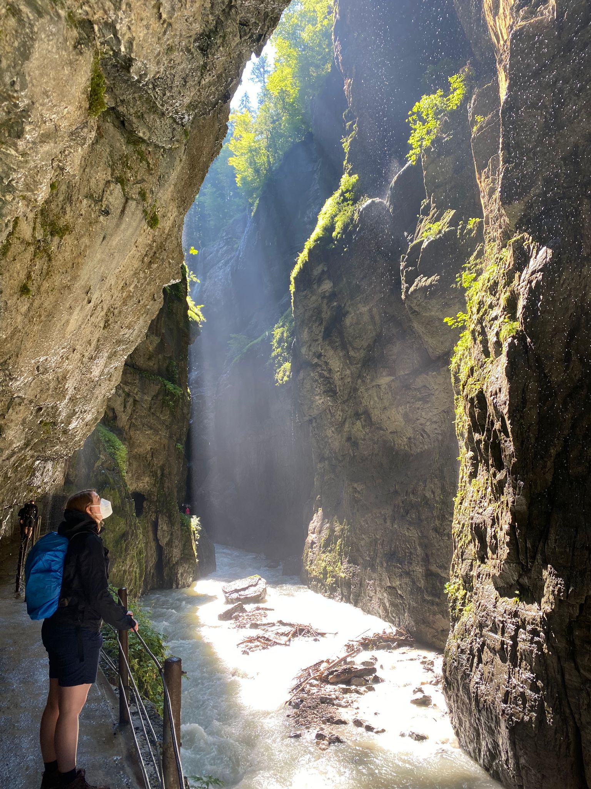

Reiseberichte
Urlaub in Irland

Willkommen an den Cliffs of Moher! Die atemberaubende Natur in Irland hat uns alle in ihren Bann gezogen. Die Klippen am Meer sind wirklich beeindruckend und bieten einen fantastischen Blick über das Wasser. Wir haben die frische Meeresluft genossen und die Schönheit der Landschaft auf uns wirken lassen. Es war eine unvergessliche Erfahrung, die wir immer in Erinnerung behalten werden. Kaum zu glauben, aber es gibt Leute, die für ein schönes Foto alles machen. Die Hänge runterklettern ist lebensgefährlich und kein Bild der Welt wert. Es gibt auch so genug zu bestaunen. Selten hat mich eine Landschaft so beeindruckt.
Dänemark - Wir hatten eine schöne Zeit!

Unser Besuch in Dänemark war wirklich wunderbar! Die schöne Landschaft und die freundliche Bevölkerung haben uns sehr beeindruckt. Wir haben viel Zeit am Hafen verbracht und die lokale Kultur entdeckt. Die Ruhe hat sehr geholfen, um endlich einmal richtig runterzukommen. Was war vor allem angenehm und erschreckend zugleich? Diese absolute Stille. Keine Fahrzeuggeräusche. Kein Lärm von irgendwelchen Maschinen. Wir kommen gerne wieder.
Wir bleiben in Deutschland

Anstatt wieder zu Fliegen, haben wir entschieden, unsere Zeit in Deutschland zu verbringen. Die natürliche Schönheit und die ruhige Atmosphäre haben uns sehr beeindruckt. Wir haben viel Zeit in der Natur verbracht. Endlich konnte ich die Partnachklamm besuchen, die schon so lange auf meiner Liste stand. Das Foto kann es kaum festhalten, wie beeindruckend die Klamm wirklich ist. Wer die Gelegenheit bekommt, sollte sie unbedingt einmal besuchen. Also, auch in Deutschland gibt es wahnsinnig schöne Orte.